CODING AGENTS AS PIXEL WORLD MODELS
traex/DeepSeek-V4.1-Flash · common50_0004
点击播放 · 原生 RGB 像素
逐轮保存的候选
回放视频、检查图与代码变化。
每份候选均可单独播放。实际图片检查记录在下方工具轨迹中。
候选 01播放与检查图
点击播放 · 原生 RGB 像素

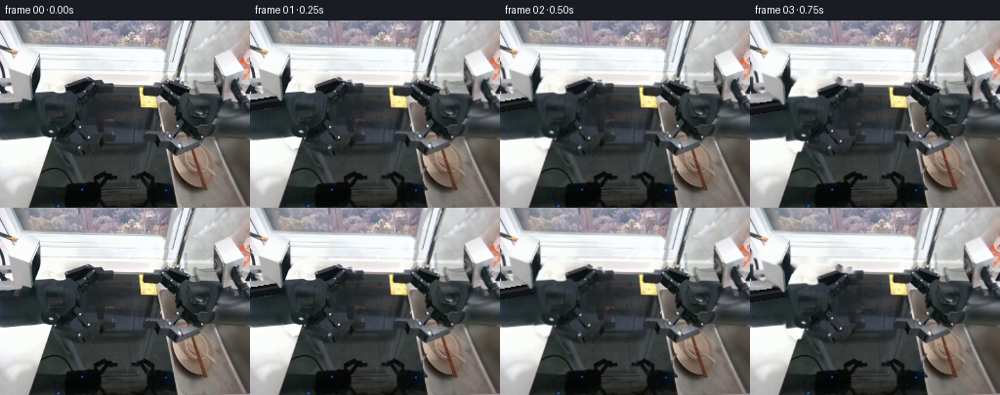
展开代码变化
--- 上一保存版本
+++ 本次保存版本
@@ -0,0 +1,252 @@
+from pathlib import Path
+
+import cv2
+import numpy as np
+from PIL import Image
+
+import artifact_io
+
+
+ROOT = Path(__file__).resolve().parent
+SOURCE = np.asarray(Image.open(ROOT / "first_frame.png").convert("RGB"))
+HEIGHT, WIDTH = SOURCE.shape[:2]
+FRAME_COUNT = 20
+
+
+def smoothstep(value):
+ value = float(np.clip(value, 0.0, 1.0))
+ return value * value * (3.0 - 2.0 * value)
+
+
+def polygon_mask(points, blur=0.65, grow=0):
+ mask = np.zeros((HEIGHT, WIDTH), np.uint8)
+ cv2.fillPoly(mask, [np.asarray(points, np.int32)], 255)
+ if grow:
+ kernel = cv2.getStructuringElement(cv2.MORPH_ELLIPSE, (grow * 2 + 1, grow * 2 + 1))
+ mask = cv2.dilate(mask, kernel)
+ if blur:
+ mask = cv2.GaussianBlur(mask, (0, 0), blur)
+ return mask
+
+
+def ellipse_mask(center, axes, blur=0.65, grow=0):
+ mask = np.zeros((HEIGHT, WIDTH), np.uint8)
+ cv2.ellipse(mask, center, axes, 0, 0, 360, 255, -1)
+ if grow:
+ kernel = cv2.getStructuringElement(cv2.MORPH_ELLIPSE, (grow * 2 + 1, grow * 2 + 1))
+ mask = cv2.dilate(mask, kernel)
+ if blur:
+ mask = cv2.GaussianBlur(mask, (0, 0), blur)
+ return mask
+
+
+LEFT_GRIPPER_POLYGON = [
+ (27, 75), (34, 67), (41, 62), (47, 54), (64, 51), (78, 53),
+ (91, 62), (103, 63), (109, 71), (106, 84), (111, 91), (112, 101),
+ (107, 108), (106, 117), (99, 127), (92, 132), (84, 129), (79, 121),
+ (76, 110), (71, 98), (65, 96), (60, 104), (58, 117), (52, 129),
+ (43, 131), (35, 124), (34, 115), (38, 105), (42, 97), (37, 88),
+ (30, 82),
+]
+
+LEFT_CABLE_POLYGON = [
+ (0, 47), (13, 50), (27, 55), (34, 64), (33, 82), (27, 77),
+ (15, 68), (0, 67),
+]
+
+
+def build_masks():
+ gripper = polygon_mask(LEFT_GRIPPER_POLYGON, blur=0.55)
+ cable = polygon_mask(LEFT_CABLE_POLYGON, blur=0.75)
+ robot = np.maximum(gripper, cable)
+
+ bowl = ellipse_mask((199, 161), (22, 18), blur=0.5)
+ plate = ellipse_mask((197, 184), (27, 13), blur=0.5)
+ chopsticks = polygon_mask(
+ [(186, 158), (216, 161), (216, 192), (185, 192)], blur=0.45
+ )
+ tableware = np.maximum(np.maximum(bowl, plate), chopsticks)
+ return robot, tableware
+
+
+def inpaint_scene(source, mask):
+ high = cv2.resize(source, (WIDTH * 4, HEIGHT * 4), interpolation=cv2.INTER_CUBIC)
+ high_mask = cv2.resize(mask, (WIDTH * 4, HEIGHT * 4), interpolation=cv2.INTER_NEAREST)
+ high_mask = cv2.dilate(
+ high_mask,
+ cv2.getStructuringElement(cv2.MORPH_ELLIPSE, (7, 7)),
+ )
+ cleaned = cv2.inpaint(high, high_mask, 11, cv2.INPAINT_TELEA)
+ cleaned = cv2.resize(cleaned, (WIDTH, HEIGHT), interpolation=cv2.INTER_AREA)
+ return cleaned
+
+
+def premultiplied_rgba(source, alpha):
+ alpha_float = alpha.astype(np.float32) / 255.0
+ rgb = source.astype(np.float32) * alpha_float[..., None]
+ return rgb, alpha_float
+
+
+def warp_layer(rgb, alpha, matrix):
+ size = (WIDTH, HEIGHT)
+ warped_rgb = cv2.warpAffine(
+ rgb, matrix, size, flags=cv2.INTER_LINEAR, borderMode=cv2.BORDER_CONSTANT
+ )
+ warped_alpha = cv2.warpAffine(
+ alpha, matrix, size, flags=cv2.INTER_LINEAR, borderMode=cv2.BORDER_CONSTANT
+ )
+ return warped_rgb, warped_alpha
+
+
+def composite(canvas, rgb, alpha):
+ alpha3 = alpha[..., None]
+ return np.clip(rgb + canvas.astype(np.float32) * (1.0 - alpha3), 0, 255)
+
+
+def affine_for_gripper(position, scale, angle_degrees):
+ pivot = np.array([72.0, 97.0], np.float32)
+ destination = np.array(position, np.float32)
+ rotation = cv2.getRotationMatrix2D((0.0, 0.0), angle_degrees, scale)
+ linear = rotation[:, :2]
+ translation = destination - linear @ pivot
+ return np.array(
+ [[linear[0, 0], linear[0, 1], translation[0]],
+ [linear[1, 0], linear[1, 1], translation[1]]],
+ np.float32,
+ )
+
+
+def cubic_bezier(p0, p1, p2, p3, t):
+ u = 1.0 - t
+ return (
+ (u ** 3) * np.asarray(p0)
+ + (3.0 * u * u * t) * np.asarray(p1)
+ + (3.0 * u * t * t) * np.asarray(p2)
+ + (t ** 3) * np.asarray(p3)
+ )
+
+
+def add_soft_shadow(canvas, alpha, offset=(2, 4), strength=0.20):
+ shadow = cv2.GaussianBlur(alpha, (0, 0), 2.2)
+ matrix = np.array(
+ [[1.0, 0.0, offset[0]], [0.0, 1.0, offset[1]]], np.float32
+ )
+ shadow = cv2.warpAffine(
+ shadow, matrix, (WIDTH, HEIGHT), flags=cv2.INTER_LINEAR,
+ borderMode=cv2.BORDER_CONSTANT,
+ )
+ shade = 1.0 - strength * shadow[..., None]
+ return canvas.astype(np.float32) * shade
+
+
+def draw_arm_link(canvas, wrist, t):
+ """Draw a restrained articulated link entering from the left edge."""
+ scale = 4
+ layer = np.zeros((HEIGHT * scale, WIDTH * scale, 3), np.uint8)
+
+ shoulder = np.array([-17.0, 57.0])
+ target = np.array(wrist, dtype=np.float32)
+
+ # The elbow remains outside the crop. The visible forearm enters from left.
+ elbow = np.array([-38.0, 91.0 + 13.0 * np.sin(np.pi * t)])
+ cv2.line(
+ layer,
+ tuple(np.rint(elbow * scale).astype(int)),
+ tuple(np.rint(target * scale).astype(int)),
+ (17, 19, 20),
+ 10 * scale,
+ cv2.LINE_AA,
+ )
+ cv2.line(
+ layer,
+ tuple(np.rint((elbow + np.array([1.5, -1.8])) * scale).astype(int)),
+ tuple(np.rint((target + np.array([1.5, -1.8])) * scale).astype(int)),
+ (42, 45, 47),
+ 2 * scale,
+ cv2.LINE_AA,
+ )
+ joint = np.rint(target * scale).astype(int)
+ cv2.circle(layer, tuple(joint), 7 * scale, (13, 15, 16), -1, cv2.LINE_AA)
+ cv2.circle(layer, tuple(joint), 7 * scale, (48, 51, 53), 2 * scale, cv2.LINE_AA)
+ cv2.circle(layer, tuple(joint), 2 * scale, (7, 8, 9), -1, cv2.LINE_AA)
+
+ layer = cv2.resize(layer, (WIDTH, HEIGHT), interpolation=cv2.INTER_AREA)
+ mask = np.max(layer, axis=2).astype(np.float32) > 4.0
+ out = canvas.copy()
+ out[mask] = layer[mask]
+ return out
+
+
+def main():
+ robot_alpha, tableware_alpha = build_masks()
+ combined = np.maximum(robot_alpha, tableware_alpha)
+ background = inpaint_scene(SOURCE, combined)
+
+ robot_rgb, robot_a = premultiplied_rgba(SOURCE, robot_alpha)
+ objects_rgb, objects_a = premultiplied_rgba(SOURCE, tableware_alpha)
+
+ frames = []
+ for index in range(FRAME_COUNT):
+ if index == 0:
+ frames.append(SOURCE.copy())
+ continue
+
+ t = index / (FRAME_COUNT - 1)
+ reach = smoothstep((t - 0.07) / 0.66)
+ settle = smoothstep((t - 0.72) / 0.14)
+ lift = smoothstep((t - 0.84) / 0.16)
+
+ position = cubic_bezier(
+ (72.0, 97.0),
+ (86.0, 126.0),
+ (132.0, 156.0),
+ (200.0, 161.0),
+ reach,
+ )
+ position = position + np.array([0.0, -7.0 * lift])
+
+ scale = 1.0 - 0.32 * reach
+ angle = -4.0 * reach + 0.8 * settle
+ matrix = affine_for_gripper(position, scale, angle)
+
+ object_shift = np.array([-1.0 * lift, -8.0 * lift])
+ object_matrix = np.array(
+ [[1.0, 0.0, object_shift[0]], [0.0, 1.0, object_shift[1]]],
+ np.float32,
+ )
+ warped_objects_rgb, warped_objects_a = warp_layer(
+ objects_rgb, objects_a, object_matrix
+ )
+
+ canvas = background.astype(np.float32)
+ canvas = composite(canvas, warped_objects_rgb, warped_objects_a)
+ canvas = add_soft_shadow(canvas, warped_objects_a, offset=(2, 3), strength=0.10)
+
+ warped_robot_rgb, warped_robot_a = warp_layer(
+ robot_rgb, robot_a, matrix
+ )
+ canvas = add_soft_shadow(canvas, warped_robot_a, offset=(3, 4), strength=0.20)
+
+ wrist = matrix @ np.array([62.0, 77.0, 1.0], np.float32)
+ canvas = draw_arm_link(canvas, wrist, t)
+ canvas = composite(canvas, warped_robot_rgb, warped_robot_a)
+
+ frames.append(np.clip(canvas, 0, 255).astype(np.uint8))
+
+ frames = np.stack(frames, axis=0)
+ frames[0] = SOURCE
+ artifact_io.save(frames, ROOT)
+
+ writer = cv2.VideoWriter(
+ str(ROOT / "preview.mp4"),
+ cv2.VideoWriter_fourcc(*"mp4v"),
+ 4.0,
+ (WIDTH, HEIGHT),
+ )
+ for frame in frames:
+ writer.write(cv2.cvtColor(frame, cv2.COLOR_RGB2BGR))
+ writer.release()
+
+
+if __name__ == "__main__":
+ main()
候选 02播放与检查图
点击播放 · 原生 RGB 像素
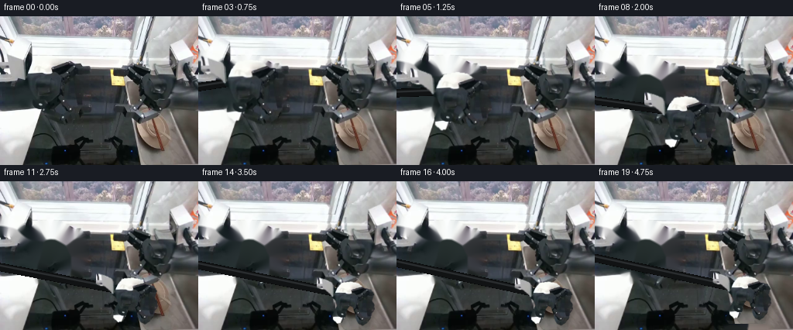
展开代码变化
--- 上一保存版本
+++ 本次保存版本
@@ -58,7 +58,10 @@
def build_masks():
gripper = polygon_mask(LEFT_GRIPPER_POLYGON, blur=0.55)
cable = polygon_mask(LEFT_CABLE_POLYGON, blur=0.75)
- robot = np.maximum(gripper, cable)
+ # The cable is re-drawn as a live spline. Warping the old cable with the
+ # gripper would drag a dark streak across the tabletop.
+ robot = gripper
+ removable = np.maximum(gripper, cable)
bowl = ellipse_mask((199, 161), (22, 18), blur=0.5)
plate = ellipse_mask((197, 184), (27, 13), blur=0.5)
@@ -66,7 +69,7 @@
[(186, 158), (216, 161), (216, 192), (185, 192)], blur=0.45
)
tableware = np.maximum(np.maximum(bowl, plate), chopsticks)
- return robot, tableware
+ return robot, tableware, removable
def inpaint_scene(source, mask):
@@ -140,35 +143,24 @@
def draw_arm_link(canvas, wrist, t):
- """Draw a restrained articulated link entering from the left edge."""
+ """Draw the cable and wrist hardware that support the left gripper."""
scale = 4
layer = np.zeros((HEIGHT * scale, WIDTH * scale, 3), np.uint8)
- shoulder = np.array([-17.0, 57.0])
target = np.array(wrist, dtype=np.float32)
-
- # The elbow remains outside the crop. The visible forearm enters from left.
- elbow = np.array([-38.0, 91.0 + 13.0 * np.sin(np.pi * t)])
- cv2.line(
- layer,
- tuple(np.rint(elbow * scale).astype(int)),
- tuple(np.rint(target * scale).astype(int)),
- (17, 19, 20),
- 10 * scale,
- cv2.LINE_AA,
- )
- cv2.line(
- layer,
- tuple(np.rint((elbow + np.array([1.5, -1.8])) * scale).astype(int)),
- tuple(np.rint((target + np.array([1.5, -1.8])) * scale).astype(int)),
- (42, 45, 47),
- 2 * scale,
- cv2.LINE_AA,
- )
+ curve = np.array(
+ [[-7.0, 46.0], [8.0, 54.0], [25.0, 57.0], [42.0, 64.0],
+ [55.0, 72.0], target],
+ np.float32,
+ )
+ curve = (curve * scale).astype(np.int32)
+ cv2.polylines(layer, [curve], False, (9, 11, 12), 4 * scale, cv2.LINE_AA)
+ cv2.polylines(layer, [curve], False, (38, 40, 40), 1 * scale, cv2.LINE_AA)
+
joint = np.rint(target * scale).astype(int)
- cv2.circle(layer, tuple(joint), 7 * scale, (13, 15, 16), -1, cv2.LINE_AA)
- cv2.circle(layer, tuple(joint), 7 * scale, (48, 51, 53), 2 * scale, cv2.LINE_AA)
- cv2.circle(layer, tuple(joint), 2 * scale, (7, 8, 9), -1, cv2.LINE_AA)
+ cv2.circle(layer, tuple(joint), 6 * scale, (12, 14, 15), -1, cv2.LINE_AA)
+ cv2.circle(layer, tuple(joint), 5 * scale, (49, 52, 54), 1 * scale, cv2.LINE_AA)
+ cv2.circle(layer, tuple(joint), 2 * scale, (8, 9, 10), -1, cv2.LINE_AA)
layer = cv2.resize(layer, (WIDTH, HEIGHT), interpolation=cv2.INTER_AREA)
mask = np.max(layer, axis=2).astype(np.float32) > 4.0
@@ -178,8 +170,8 @@
def main():
- robot_alpha, tableware_alpha = build_masks()
- combined = np.maximum(robot_alpha, tableware_alpha)
+ robot_alpha, tableware_alpha, removable_alpha = build_masks()
+ combined = np.maximum(removable_alpha, tableware_alpha)
background = inpaint_scene(SOURCE, combined)
robot_rgb, robot_a = premultiplied_rgba(SOURCE, robot_alpha)
@@ -194,7 +186,7 @@
t = index / (FRAME_COUNT - 1)
reach = smoothstep((t - 0.07) / 0.66)
settle = smoothstep((t - 0.72) / 0.14)
- lift = smoothstep((t - 0.84) / 0.16)
+ lift = smoothstep((t - 0.79) / 0.21)
position = cubic_bezier(
(72.0, 97.0),
@@ -205,11 +197,11 @@
)
position = position + np.array([0.0, -7.0 * lift])
- scale = 1.0 - 0.32 * reach
- angle = -4.0 * reach + 0.8 * settle
+ scale = 1.0 - 0.24 * reach
+ angle = -5.0 * reach + 0.8 * settle
matrix = affine_for_gripper(position, scale, angle)
- object_shift = np.array([-1.0 * lift, -8.0 * lift])
+ object_shift = np.array([-1.5 * lift, -12.0 * lift])
object_matrix = np.array(
[[1.0, 0.0, object_shift[0]], [0.0, 1.0, object_shift[1]]],
np.float32,
@@ -227,7 +219,7 @@
)
canvas = add_soft_shadow(canvas, warped_robot_a, offset=(3, 4), strength=0.20)
- wrist = matrix @ np.array([62.0, 77.0, 1.0], np.float32)
+ wrist = matrix @ np.array([52.0, 70.0, 1.0], np.float32)
canvas = draw_arm_link(canvas, wrist, t)
canvas = composite(canvas, warped_robot_rgb, warped_robot_a)
候选 03播放与检查图

候选 04播放与检查图
点击播放 · 原生 RGB 像素

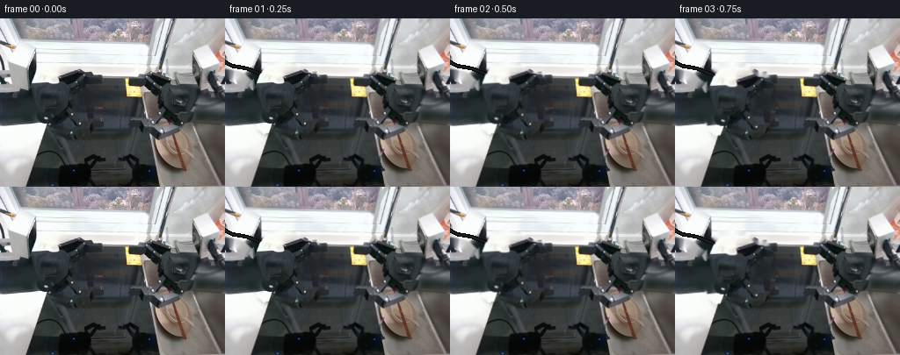
展开代码变化
--- 上一保存版本
+++ 本次保存版本
@@ -190,15 +190,15 @@
position = cubic_bezier(
(72.0, 97.0),
- (86.0, 126.0),
- (132.0, 156.0),
- (200.0, 161.0),
+ (88.0, 122.0),
+ (128.0, 145.0),
+ (181.0, 146.0),
reach,
)
- position = position + np.array([0.0, -7.0 * lift])
+ position = position + np.array([0.0, -10.0 * lift])
scale = 1.0 - 0.24 * reach
- angle = -5.0 * reach + 0.8 * settle
+ angle = -36.0 * reach + 0.8 * settle
matrix = affine_for_gripper(position, scale, angle)
object_shift = np.array([-1.5 * lift, -12.0 * lift])
@@ -219,7 +219,7 @@
)
canvas = add_soft_shadow(canvas, warped_robot_a, offset=(3, 4), strength=0.20)
- wrist = matrix @ np.array([52.0, 70.0, 1.0], np.float32)
+ wrist = matrix @ np.array([62.0, 78.0, 1.0], np.float32)
canvas = draw_arm_link(canvas, wrist, t)
canvas = composite(canvas, warped_robot_rgb, warped_robot_a)
候选 05播放与检查图
点击播放 · 原生 RGB 像素

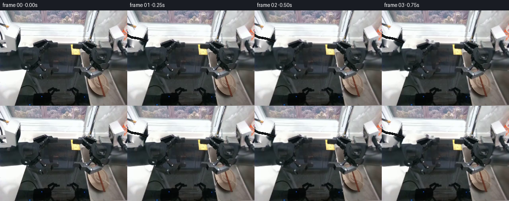
展开代码变化
--- 上一保存版本
+++ 本次保存版本
@@ -63,8 +63,16 @@
robot = gripper
removable = np.maximum(gripper, cable)
- bowl = ellipse_mask((199, 161), (22, 18), blur=0.5)
- plate = ellipse_mask((197, 184), (27, 13), blur=0.5)
+ bowl = polygon_mask(
+ [(182, 150), (203, 148), (216, 155), (219, 166), (213, 175),
+ (199, 178), (185, 173), (178, 162)],
+ blur=0.45,
+ )
+ plate = polygon_mask(
+ [(169, 173), (181, 174), (197, 178), (216, 176), (224, 181),
+ (219, 189), (195, 192), (173, 191), (166, 184)],
+ blur=0.45,
+ )
chopsticks = polygon_mask(
[(186, 158), (216, 161), (216, 192), (185, 192)], blur=0.45
)
@@ -192,16 +200,16 @@
(72.0, 97.0),
(88.0, 122.0),
(128.0, 145.0),
- (181.0, 146.0),
+ (183.0, 147.0),
reach,
)
- position = position + np.array([0.0, -10.0 * lift])
+ position = position + np.array([0.0, -14.0 * lift])
scale = 1.0 - 0.24 * reach
angle = -36.0 * reach + 0.8 * settle
matrix = affine_for_gripper(position, scale, angle)
- object_shift = np.array([-1.5 * lift, -12.0 * lift])
+ object_shift = np.array([-1.0 * lift, -13.0 * lift])
object_matrix = np.array(
[[1.0, 0.0, object_shift[0]], [0.0, 1.0, object_shift[1]]],
np.float32,
可观测工具轨迹
实际执行的命令与返回图片。
命令 1exit 0
/bin/bash -c "pwd && rg --files -g '"'!*.mp4'"' -g '"'!*.mov'"' -g '"'!*.webm'"' | sed -n '1,200p'"
命令 2exit 0
/bin/bash -c "sed -n '1,240p' prompt.txt"
命令 3exit 0
/bin/bash -c "sed -n '1,280p' GENERATION_RULES.md"
命令 4exit 0
/bin/bash -c "find . -maxdepth 2 -type f -printf '%p %s bytes\\n' | sort | sed -n '1,240p'"
命令 5exit 0
/bin/bash -c "sed -n '1,260p' artifact_io.py"
命令 6exit 127
/bin/bash -c 'cat task_spec.json && identify first_frame.png'
命令 7exit 0
/bin/bash -c "sed -n '1,240p' player_template.html"
命令 8exit 0
/bin/bash -c "python - <<'PY'
from PIL import Image
im=Image.open('first_frame.png')
print(im.size, im.mode)
im.resize((1024,768)).save('.tmp/first_frame_4x.png')
PY"命令 9exit 0
/bin/bash -c "python - <<'PY'
from PIL import Image
im=Image.open('first_frame.png')
for name,box in {'right':(150,45,256,192),'center':(60,40,220,192),'sink':(170,130,256,192)}.items():
crop=im.crop(box)
crop.resize((crop.width*8,crop.height*8)).save(f'.tmp/{name}_8x.png')
PY"命令 10exit 0
/bin/bash -c "python - <<'PY' mods=['cv2','scipy','skimage','imageio','matplotlib'] for m in mods: try: x=__import__(m); print(m, getattr(x,'__version__','ok')) except Exception as e: print(m,'NO',type(e).__name__) PY"
命令 11exit 0
/bin/bash -c "python - <<'PY'
from PIL import Image,ImageDraw,ImageFont
im=Image.open('first_frame.png').resize((1024,768),Image.Resampling.NEAREST)
d=ImageDraw.Draw(im)
for x in range(0,257,10):
X=x*4; d.line((X,0,X,768), fill=(255,0,0), width=1)
d.text((X+2,2),str(x),fill=(255,80,80))
for y in range(0,193,10):
Y=y*4; d.line((0,Y,1024,Y), fill=(255,0,0), width=1)
d.text((2,Y+1),str(y),fill=(255,80,80))
im.save('.tmp/grid.png')
PY"命令 12exit 0
/bin/bash -c "python - <<'PY'
from PIL import Image
import numpy as np
im=np.array(Image.open('first_frame.png'))
for name,(x1,y1,x2,y2) in {'bowl':(180,155,220,183),'plate':(178,177,215,192),'sticks':(188,158,216,192),'sink':(220,140,250,185),'bgcenter':(100,120,160,170)}.items():
a=im[y1:y2,x1:x2].reshape(-1,3)
print('\\n',name, 'mean', a.mean(0).round(1), 'min',a.min(0),'max',a.max(0))
# common quantized colors
q=(a//16)*16
u,c=np.unique(q,axis=0,return_counts=True)
idx=np.argsort(c)[-8:][::-1]
print([(u[i].tolist(),int(c[i])) for i in idx])
PY"命令 13exit 0
/bin/bash -c "python - <<'PY'
import cv2, numpy as np
im=cv2.imread('first_frame.png')
# edges then hough
lab=cv2.cvtColor(im,cv2.COLOR_BGR2LAB)
L=lab[:,:,0]
for th in [10,20,30,40]:
e=cv2.Canny(L,th,th*2)
lines=cv2.HoughLinesP(e,1,np.pi/180,threshold=18,minLineLength=14,maxLineGap=5)
print('th',th,'n',None if lines is None else len(lines))
if lines is not None:
out=[]
for l in lines[:,0]:
x1,y1,x2,y2=map(int,l); length=((x2-x1)**2+(y2-y1)**2)**.5
if length>18: out.append((round(length,1),(x1,y1,x2,y2)))
print(sorted(out,reverse=True)[:20])
PY"命令 14exit 0
/bin/bash -c "python - <<'PY'
from PIL import Image,ImageDraw
im=Image.open('first_frame.png').crop((20,40,125,145)).resize((840,840),Image.Resampling.NEAREST)
d=ImageDraw.Draw(im)
for x in range(20,126,5):
X=(x-20)*8; d.line((X,0,X,840),fill=(255,0,0),width=1); d.text((X+1,1),str(x),fill=(255,80,80))
for y in range(40,146,5):
Y=(y-40)*8; d.line((0,Y,840,Y),fill=(255,0,0),width=1); d.text((1,Y+1),str(y),fill=(255,80,80))
im.save('.tmp/left_grid.png')
PY"命令 15exit 0
/bin/bash -c 'python generate.py'
命令 16exit 0
/bin/bash -c "python - <<'PY'
import generate as g
from PIL import Image
import numpy as np
r,t=g.build_masks(); b=g.inpaint_scene(g.SOURCE,np.maximum(r,t))
Image.fromarray((r*0.7).astype(np.uint8)).save('.tmp/mask_robot.png')
Image.fromarray((t*0.7).astype(np.uint8)).save('.tmp/mask_objects.png')
Image.fromarray(b).save('.tmp/background.png')
PY"命令 17exit 0
/bin/bash -c "sed -n '1,320p' generate.py"
命令 18exit 0
/bin/bash -c "find . -maxdepth 2 -type f -printf '%p %s\\n' | sort | sed -n '1,220p'"
命令 19exit 0
/bin/bash -c 'git status --short 2>/dev/null || true'
命令 20exit 0
/bin/bash -c "python - <<'PY'
import cv2,numpy as np
from PIL import Image
im=np.array(Image.open('first_frame.png'))
# print boundary samples for left gripper from hand polygon
poly=np.array([(27,75),(34,67),(41,62),(47,54),(64,51),(78,53),(91,62),(103,63),(109,71),(106,84),(111,91),(112,101),(107,108),(106,117),(99,127),(92,132),(84,129),(79,121),(76,110),(71,98),(65,96),(60,104),(58,117),(52,129),(43,131),(35,124),(34,115),(38,105),(42,97),(37,88),(30,82)])
# grayscale intensity around polygon pixels
mask=np.zeros(im.shape[:2],np.uint8); cv2.fillPoly(mask,[poly],255)
vals=im[mask>0]
print('inside min mean max',vals.min(0),vals.mean(0),vals.max(0))
# boundary candidate dark mask threshold
gray=cv2.cvtColor(im,cv2.COLOR_RGB2GRAY)
for th in [60,70,80,90,100,110]:
m=(gray<th).astype(np.uint8)*255
print(th,(m>0).sum())
PY"命令 21exit 0
/bin/bash -c 'python generate.py'
命令 22exit 0
/bin/bash -c "python - <<'PY'
from PIL import Image,ImageDraw
for f in [1,5,10,15,19]:
im=Image.open(f'frames/{f:02d}.png').resize((1024,768),Image.Resampling.NEAREST)
d=ImageDraw.Draw(im)
for x in range(0,257,10):
X=x*4; d.line((X,0,X,768),fill=(255,0,0),width=1); d.text((X+1,1),str(x),fill=(255,80,80))
for y in range(0,193,10):
Y=y*4; d.line((0,Y,1024,Y),fill=(255,0,0),width=1); d.text((1,Y+1),str(y),fill=(255,80,80))
im.save(f'.tmp/grid_{f:02d}.png')
PY"命令 23exit 0
/bin/bash -c "python - <<'PY'
from PIL import Image
im=Image.open('frames/19.png')
im.crop((135,95,235,175)).resize((1000,800),Image.Resampling.NEAREST).save('.tmp/terminal_crop.png')
PY"命令 24exit 0
/bin/bash -c 'python generate.py'
命令 25exit 0
/bin/bash -c "python - <<'PY'
from PIL import Image
for f in [15,18,19]:
im=Image.open(f'frames/{f:02d}.png'); im.crop((135,90,240,175)).resize((840,680),Image.Resampling.NEAREST).save(f'.tmp/crop_{f}.png')
PY"命令 26exit 0
/bin/bash -c "python - <<'PY'
from PIL import Image
import numpy as np, cv2
im=np.array(Image.open('first_frame.png'))
# print a small color/edge map around objects to map actual outlines
for y in range(145,192,4):
row=''
for x in range(170,235,3):
r,g,b=im[y,x]
if max(r,g,b)<45: c='#'
elif r>g+12 and r>b+18: c='r'
elif min(r,g,b)>135: c='W'
elif max(r,g,b)-min(r,g,b)<15: c='.'
else:c='o'
row+=c
print(f'{y:3d} {row}')
PY"命令 27exit 0
/bin/bash -c "python - <<'PY'
from PIL import Image
im=Image.open('first_frame.png')
im.crop((165,145,235,192)).resize((1120,752),Image.Resampling.NEAREST).save('.tmp/objects_16x.png')
PY"命令 28exit 0
/bin/bash -c 'python generate.py'
命令 29exit 0
/bin/bash -c "python - <<'PY'
from PIL import Image
im=Image.open('frames/19.png')
im.crop((145,105,235,180)).resize((900,750),Image.Resampling.NEAREST).save('.tmp/final_crop.png')
PY"视觉工具实际返回图片 1

视觉工具实际返回图片 2

视觉工具实际返回图片 3
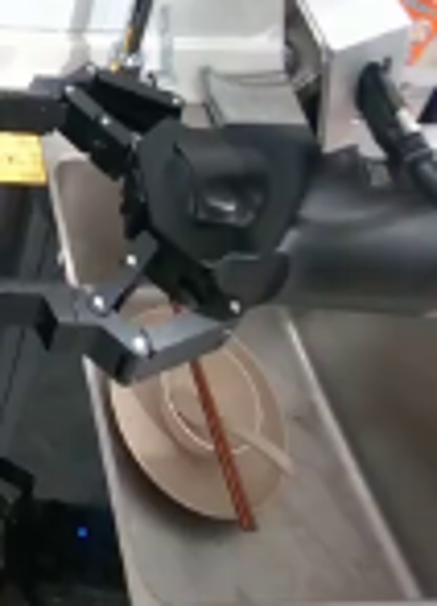
视觉工具实际返回图片 4
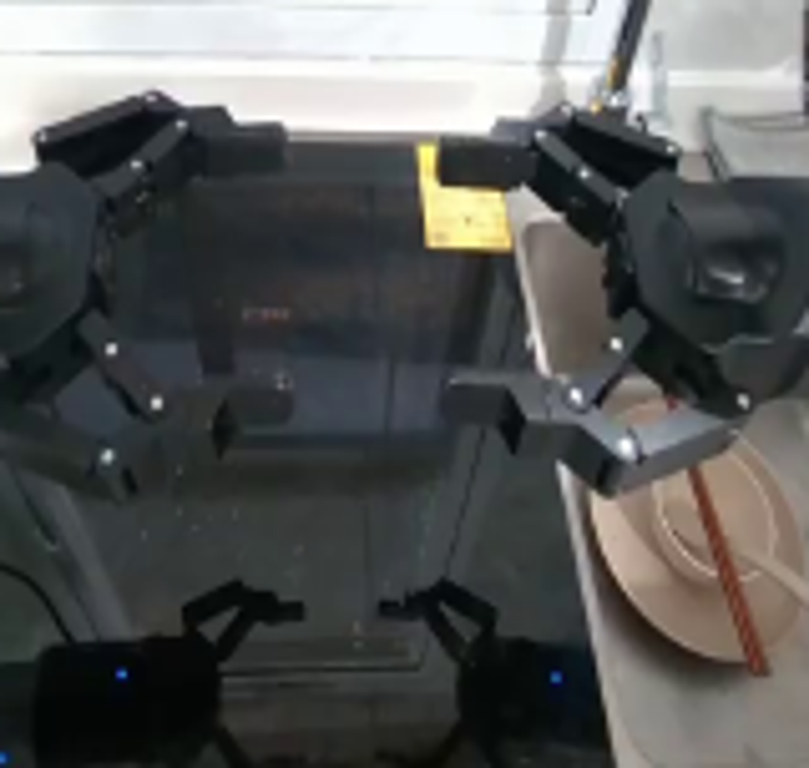
视觉工具实际返回图片 5
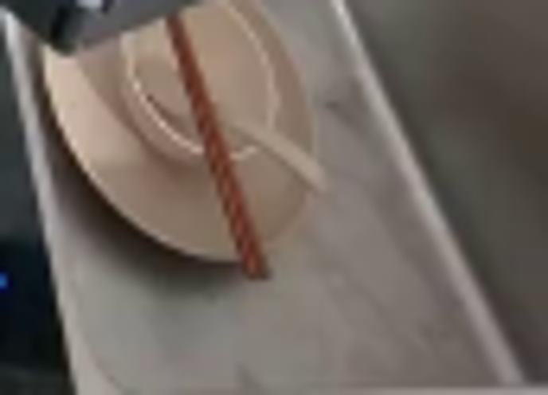
视觉工具实际返回图片 6
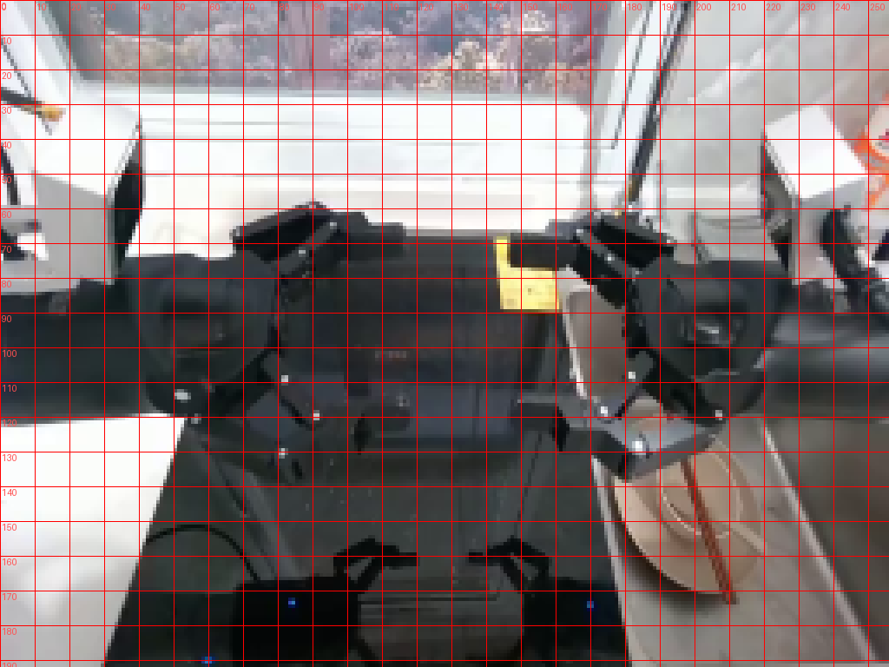
视觉工具实际返回图片 7
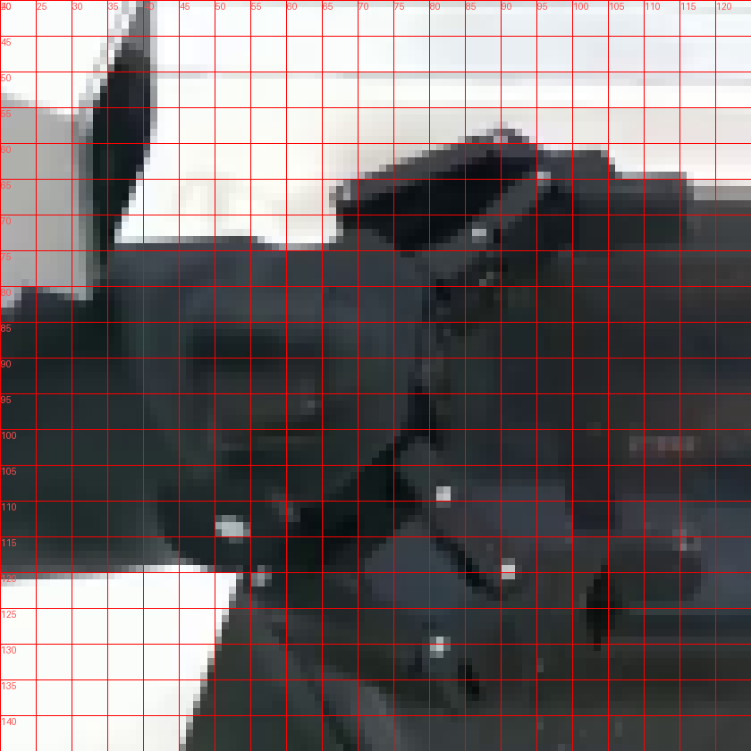
视觉工具实际返回图片 8

视觉工具实际返回图片 9
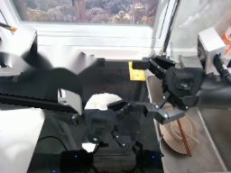
视觉工具实际返回图片 10
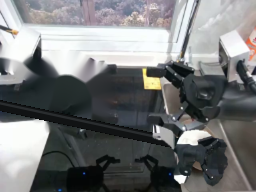
视觉工具实际返回图片 11
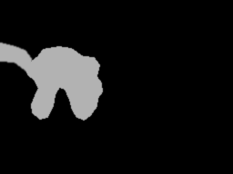
视觉工具实际返回图片 12
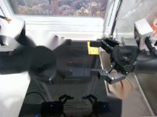
视觉工具实际返回图片 13
视觉工具实际返回图片 14
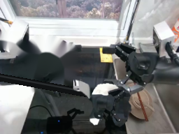
视觉工具实际返回图片 15
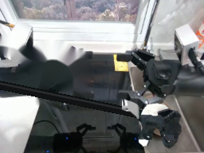
视觉工具实际返回图片 16
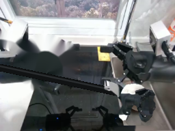
视觉工具实际返回图片 17
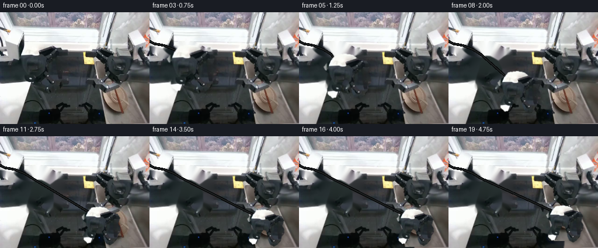
视觉工具实际返回图片 18
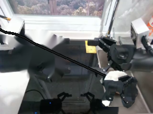
视觉工具实际返回图片 19
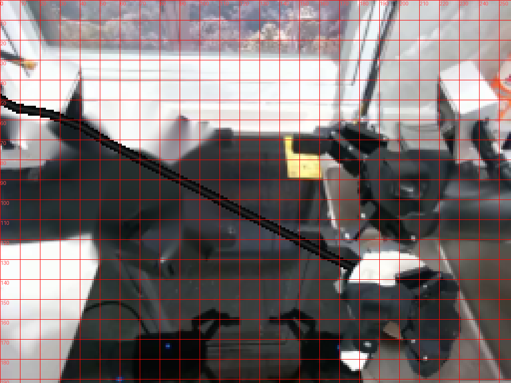
视觉工具实际返回图片 20
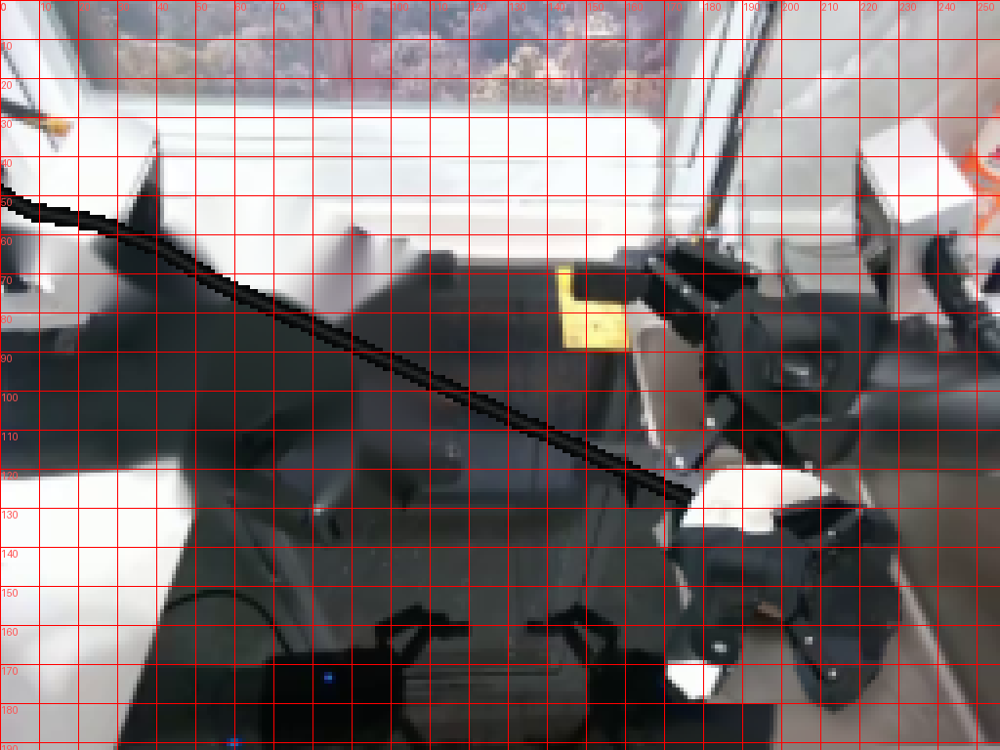
视觉工具实际返回图片 21
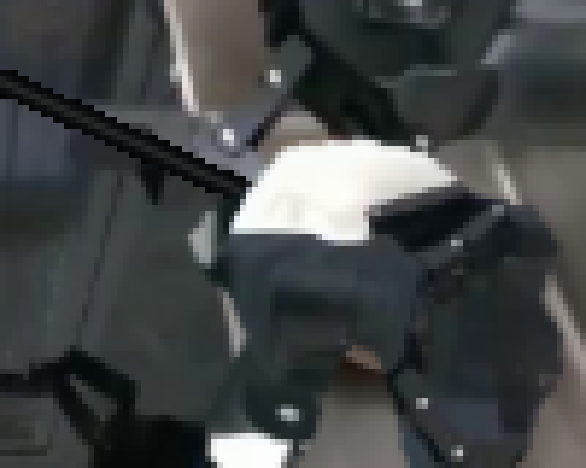
视觉工具实际返回图片 22
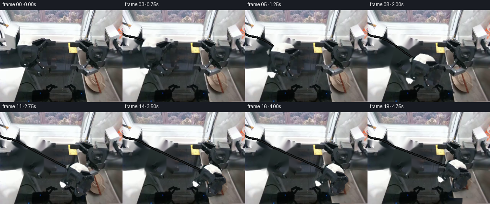
视觉工具实际返回图片 23
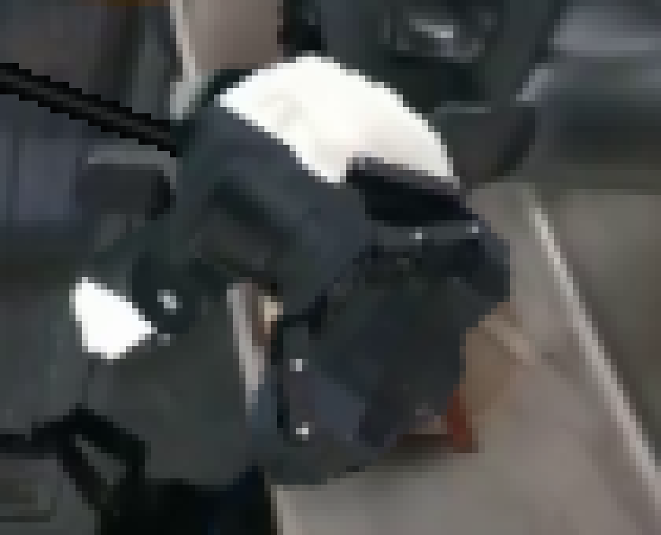
视觉工具实际返回图片 24
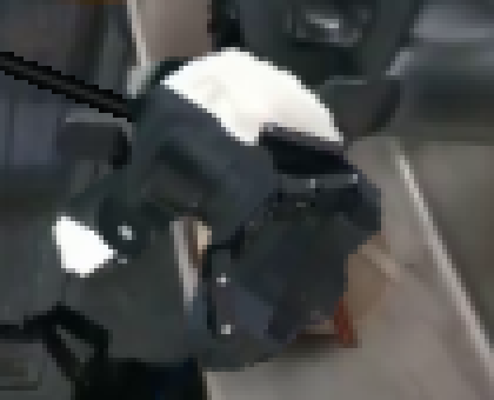
视觉工具实际返回图片 25
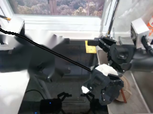
视觉工具实际返回图片 26
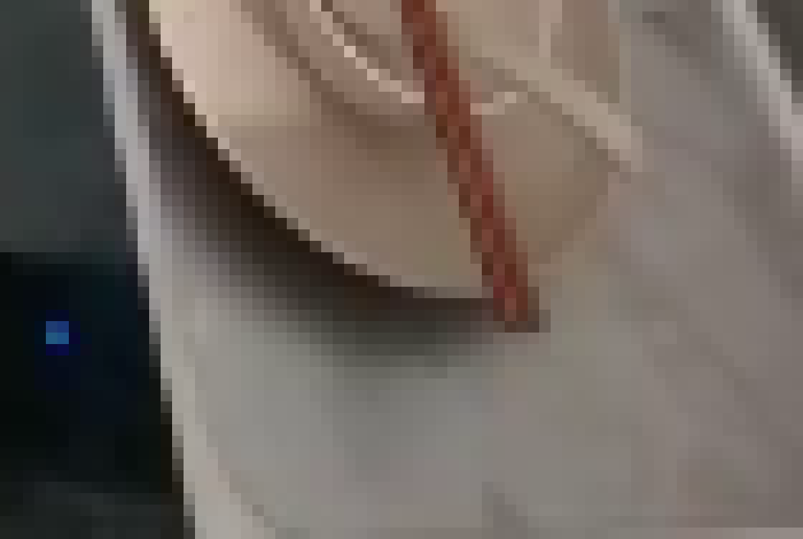
视觉工具实际返回图片 27
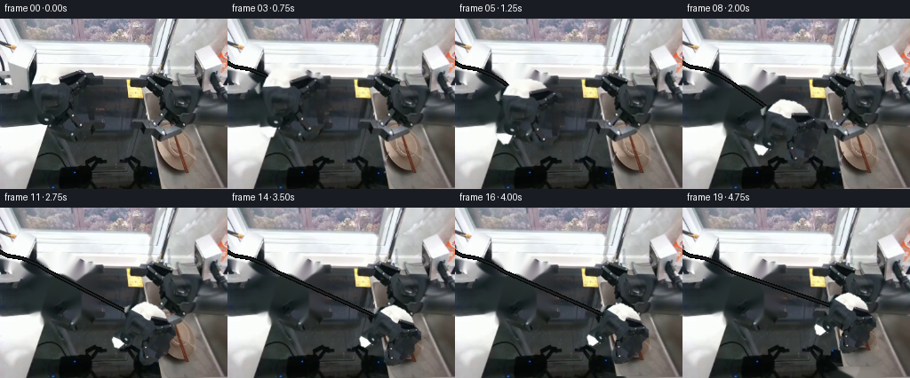
视觉工具实际返回图片 28
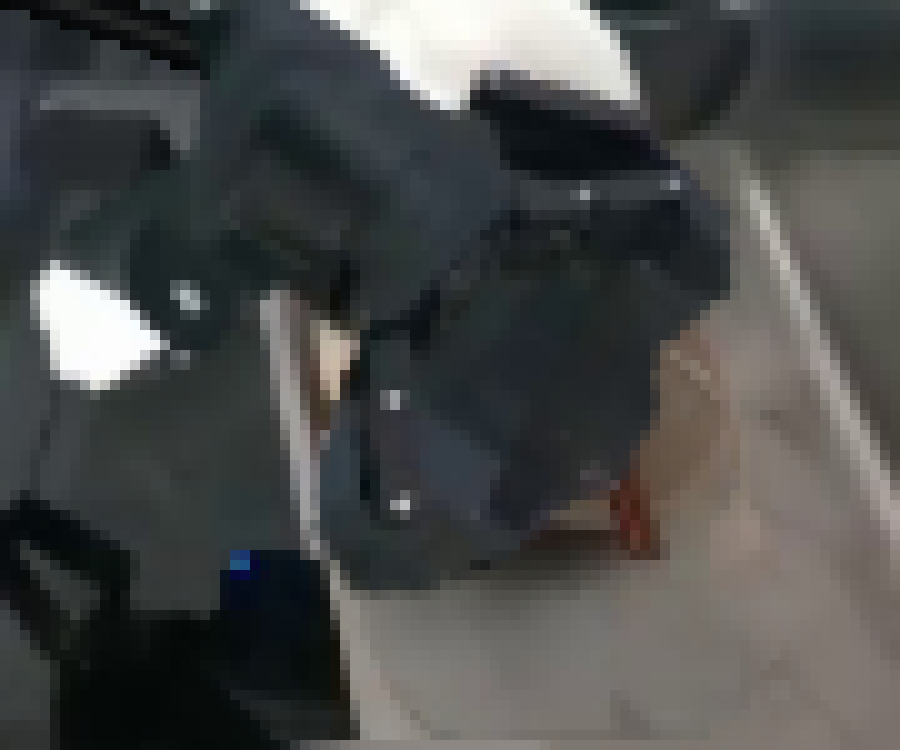
保存候选 5 份；完成命令 29 次；可验证图片返回 28 张。原始 API 响应与完整日志保留在本地。